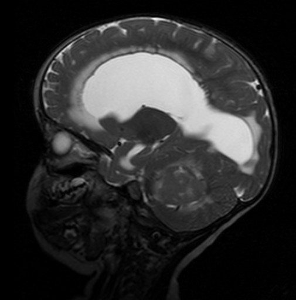

Ficha del catálogo
Meduloblastoma
- Sistema
- Nervioso
- Modalidad
- RM
- Región
- Fosa posterior, vermis y cuarto ventrículo
- Dificultad
- Avanzado
El meduloblastoma es un tumor embrionario maligno de la fosa posterior y uno de los tumores cerebrales más frecuentes de la infancia. Se origina habitualmente en el vermis cerebeloso y crece hacia el cuarto ventrículo, por lo que debuta con cefalea matutina, vómitos y ataxia por hidrocefalia obstructiva.
Técnica
Resonancia magnética de encéfalo con T1, T2, FLAIR, difusión y contraste, ampliada de forma obligada a todo el neuroeje para buscar diseminación por el líquido cefalorraquídeo. El estudio raquídeo debe hacerse antes de la cirugía siempre que sea posible.
Qué observar
- Masa de línea media en el vermis que ocupa el cuarto ventrículo
- Restricción marcada a la difusión por alta densidad celular
- Hiperdensidad espontánea en tomografía
- Hidrocefalia triventricular por obstrucción del cuarto ventrículo
- Quistes intratumorales y realce variable
- Nódulos de diseminación leptomeníngea en encéfalo y en médula
Hallazgos
Masa sólida de la línea media que ocupa el cuarto ventrículo y desplaza el tronco hacia delante, con señal intermedia en T1 y T2 y restricción intensa a la difusión. El realce es variable y con frecuencia heterogéneo, y pueden verse pequeños quistes. La hidrocefalia obstructiva es casi constante en el momento del diagnóstico. La diseminación por el líquido cefalorraquídeo se manifiesta como realce lineal o nodular en las superficies pial y ependimaria y a lo largo de la cola de caballo.
Perlas
La restricción intensa a la difusión es un rasgo que separa este tumor de los tumores de fosa posterior con menor densidad celular y ayuda cuando el realce es poco expresivo. El estudio del neuroeje debe realizarse antes de la cirugía, porque los cambios posquirúrgicos producen realce meníngeo que impide valorar de forma fiable la diseminación.
Diagnóstico diferencial
- Astrocitoma pilocítico cerebeloso
- Quiste grande con nódulo mural que realza intensamente, sin restricción a la difusión y de localización hemisférica.
- Ependimoma del cuarto ventrículo
- Tumor plástico que se extiende por los agujeros de salida hacia las cisternas, con calcificaciones frecuentes.
- Tumor teratoide rabdoide atípico
- Aparece en lactantes, es más heterogéneo con hemorragia y con frecuencia se localiza fuera de la línea media.
- Glioma difuso de la protuberancia
- Expande el tronco de forma difusa y engloba la arteria basilar, sin ocupar primariamente el cuarto ventrículo.
Simuladores
- Artefacto de susceptibilidad de la fosa posterior en difusión
- Coágulo intraventricular en el cuarto ventrículo
- Realce meníngeo posquirúrgico o posterior a punción lumbar
Por modalidad
- TC
- Muestra la masa hiperdensa de línea media y la hidrocefalia, y es la primera prueba en el contexto urgente.
- RM
- Caracteriza el tumor, precisa su relación con el suelo del cuarto ventrículo y detecta la diseminación por el neuroeje.
Protocolo
Estudio craneal completo con difusión y contraste seguido de resonancia de todo el raquis con series sagitales y axiales tras contraste; conviene además realizar el estudio del líquido cefalorraquídeo para completar la estadificación.
Clasificación
Se agrupa en subtipos moleculares con implicaciones pronósticas diferentes, que en la clasificación vigente comprenden el grupo asociado a la vía de señalización sonic hedgehog, el asociado a la vía Wnt y dos grupos adicionales definidos por perfiles de expresión. La imagen no establece el subtipo, aunque la localización hemisférica se asocia con más frecuencia a uno de los grupos.
Errores frecuentes
- No estudiar el neuroeje antes de la cirugía
- Confundirlo con un astrocitoma pilocítico por no valorar la difusión
- Omitir la descripción de la relación del tumor con el suelo del cuarto ventrículo

meduloblastoma fosa posterior cuarto ventrículo difusión restringida diseminación leptomeníngea tumor pediátrico